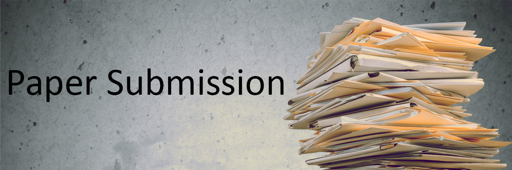

Paper submission is the step in which the author or authors present their best work for review by the organizing committee..

Organizing paper submission:
Paper should include the following in the order listed:
1)Title page. Include only the title of the manuscript (do not include authors’ names).
2)Abstract. Outline the purpose, scope, and conclusions of the manuscript in 100 words or less.
3)Keywords. Select 4 to 8 keywords.
4)Headings. Use 1st, 2nd, and 3rd-level, unnumbered and unlettered headings.
5)Text. To permit objective reviews by two or more referees, the abstract, first page, and the rest of the text should not reveal the authors and/or affiliations.
6)References. Present in a proper, consistent format (APA style required on final version).
7)Illustrations and tables. These should be titled, numbered (in Arabic numerals), and placed appropriately within the body of the text.
8)Acknowledgments. Acknowledgments should recognize prior publication as a conference proceeding, indicate grant or other support, and state significant contributions from non-authors.
After submitting the papers to the jury . The jury will check all the format and the matter regarding the topic and announce the round winners and the round winners are quailfied to the next round.
Here is the video of how to prepare a paper submission: